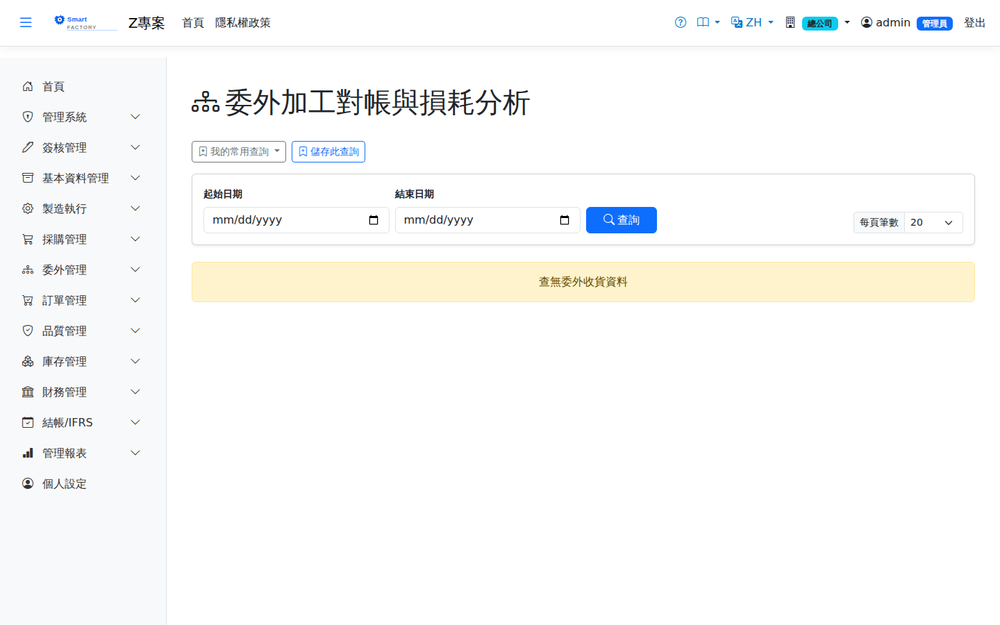

委外加工對帳與損耗分析Outsource Reconciliation & Scrap Analysis
路由：/OutsourcePerformance | 加工廠對帳單與損耗率排名Route: /OutsourcePerformance | Subcontractor reconciliation statement and scrap rate ranking
依加工廠彙總期間委外收貨的加工費、超耗扣款與損耗率，供每月對帳與加工廠績效評比。Summarises the processing charges, scrap penalties and scrap rate of outsource receipts by subcontractor for the period, for monthly reconciliation and supplier performance review.

委外加工對帳與損耗分析畫面截圖（示意，實際欄位/資料依權限與查詢條件而異）Outsource reconciliation and scrap analysis screenshot (illustrative; actual fields and data vary by permission and query criteria)
查詢Search
1
查詢列輸入條件後點「查詢」；欄位標題可點擊排序，清單下方有分頁導航。Enter your criteria on the query bar and click "Search"; column headers can be clicked to sort, and the paging controls sit below the list.
2
可依加工廠、期間篩選；損耗率超過允收標準者標示。Can be filtered by subcontractor and period; a scrap rate above the acceptable standard is flagged.
欄位說明Field reference
查詢條件Query criteria
| 條件Condition | 說明Guide |
|---|---|
| 起始日期 / 結束日期Date from / Date to | 納入統計的委外收貨日期區間Outsource receipt date range included in the statistics |
報表欄位Report fields
| 欄位Field | 說明Guide |
|---|---|
| 委外廠商 / 廠商名稱Subcontractor / Supplier name | 承接加工的廠商The subcontractor doing the work |
| 收貨筆數Receipts | 區間內的委外收貨明細行數Number of outsource receipt lines in the period |
| 準時率On-time rate | 收貨日未晚於預交日的筆數比率Proportion of lines received on or before the promised delivery date |
| 收回成品量Received Qty | 廠商加工後交回的良品數量合計Total good quantity returned by the subcontractor |
| 加工費Processing Fee | 應付該廠商的委外加工費用合計Total outsource processing charges payable to the subcontractor |
| 超耗扣款Scrap Penalty | 廠商實際耗用材料超過標準用量部分的扣款金額（以發料當時凍結的 AVCO 計價）The amount charged for material the subcontractor used above the standard usage (valued at the AVCO frozen when it was issued) |
| 超耗佔比Scrap penalty share | 超耗扣款 ÷ 加工費；比率偏高代表廠商用料控管待改善Scrap penalty ÷ processing charge; a high ratio means the subcontractor's material control needs improving |